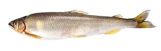

あゆ（鮎）の生産量 都道府県ランキング
1位から3位までと、とれた量
あゆが日本でいちばん多く育てられているのは岐阜県です。885 tで、全国（3,487 t）の25%を占めます。

| 順位 | 都道府県 | 収獲量 | 全国に占める割合 |
|---|---|---|---|
| 1位 | 岐阜県 | 885 t | 25% |
| 2位 | 愛知県 | 844 t | 24% |
| 3位 | 和歌山県 | 605 t | 17% |
この数字について
- 分類：川や湖の魚
- 全国の収獲量：3,487 t
- この数字が表すもの：収獲量（養殖で育てて取り上げた重さ）
- 調査：内水面漁業生産統計調査（内水面養殖業） 令和6年
- この品目は川や湖の養殖の統計です。
- 31県分を調査（調査していない県は順位に入りません）
あゆの生産量について、よくある質問
- あゆの生産量が日本一の都道府県はどこですか？
- 岐阜県です。内水面漁業生産統計調査（内水面養殖業）（令和6年）で885 tでした。
- あゆの生産量ランキング2位・3位はどこですか？
- 2位は愛知県（844 t）、3位は和歌山県（605 t）です。
- あゆの全国の生産量はどれくらいですか？
- 3,487 t（令和6年）です。